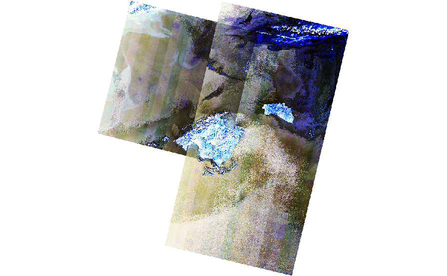
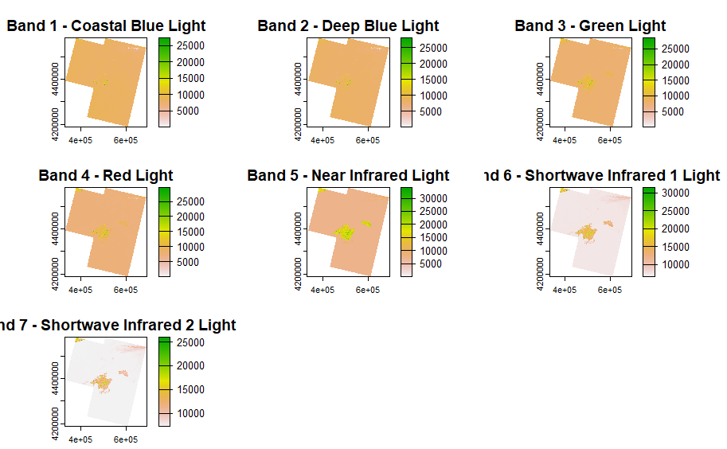
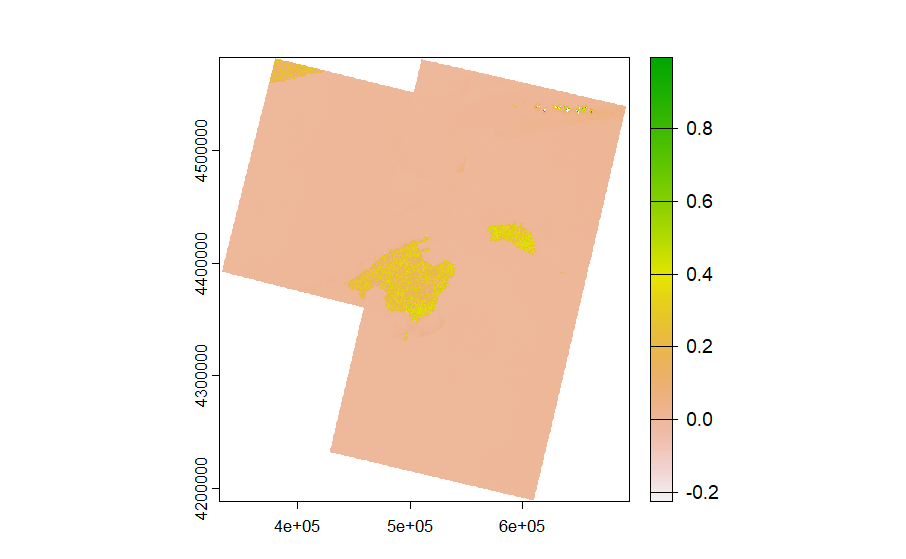
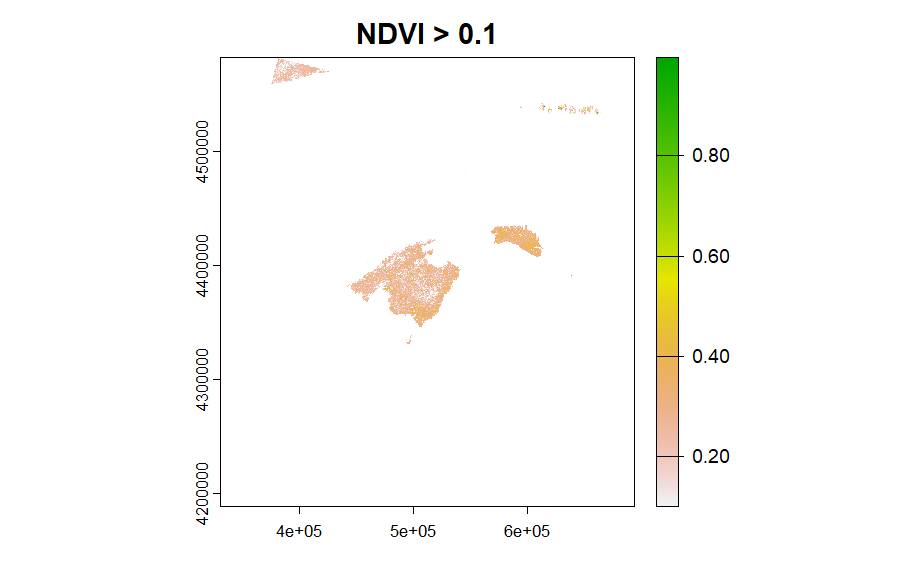
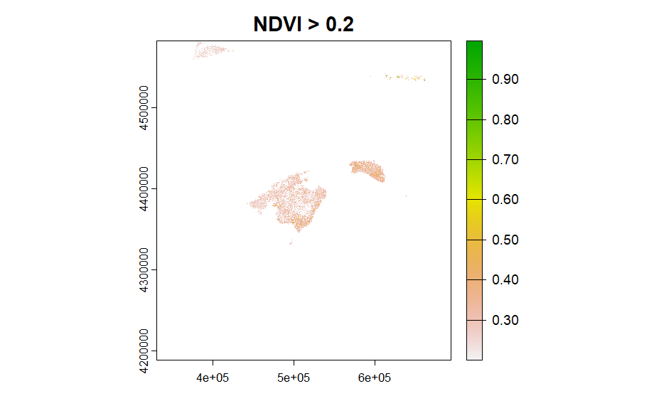
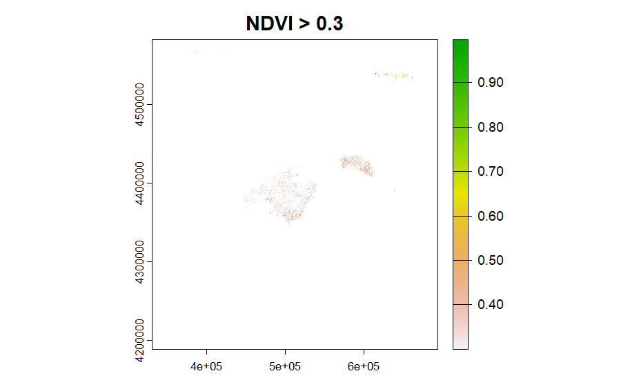
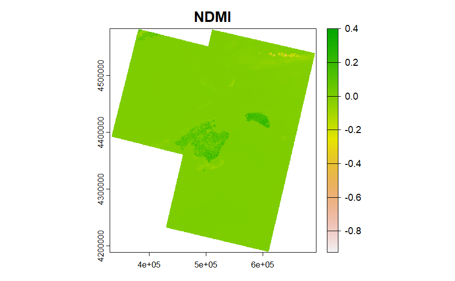
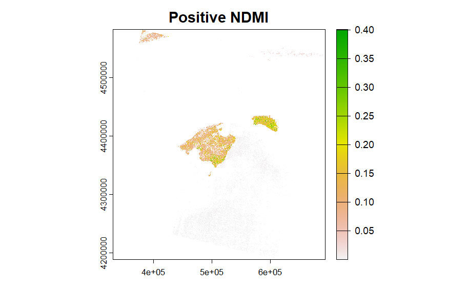
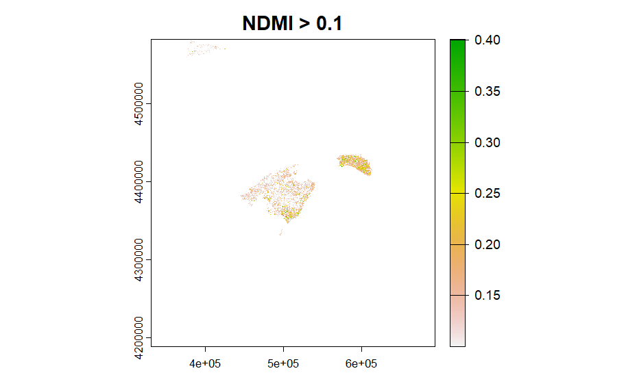
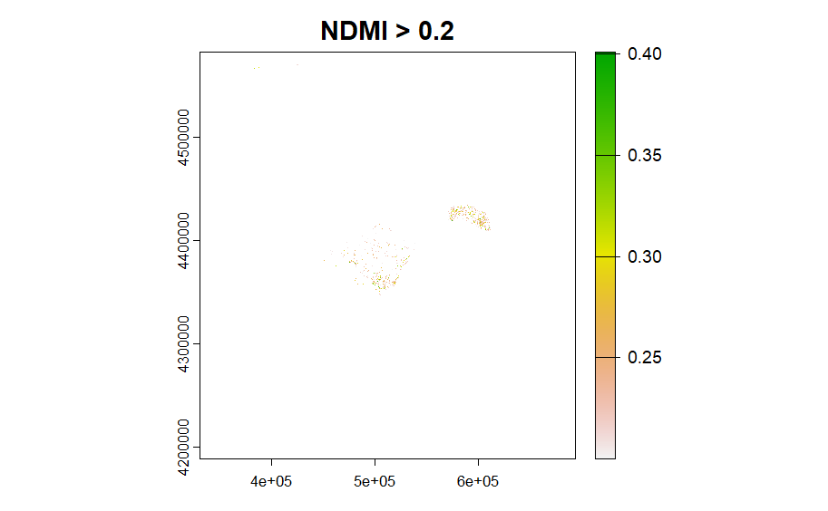

Overview
- Summary
- Application
- Reflection
3.1 Summary
3.1.1 Mind map

3.1.2 Atmospheric corrections
Empirical methods: the DOS (Dark Object Subtraction) method, which assumes that certain features in the image (e.g., deep bodies of water) should have very low reflectivity, uses these features to estimate the effect of atmospheric scattering, and corrects the entire image@song2001.
Physical model-based methods: MODTRAN (Moderate Resolution Atmospheric Transmission Code) or 6S (Second Simulated Satellite Signal) models, which use detailed information about atmospheric composition (e.g. water vapour, ozone, aerosols) to simulate how the atmosphere affects the light received by the sensor.
Image-based methods: use information from the image itself to make atmospheric corrections.
3.1.3 Geometric corrections
- Ground Control Points (GCPs) method: Images are corrected using ground control points with known geographic coordinates.
- Automatic correction method: Geometric correction is performed automatically using satellite orbit data, sensor attitude data and digital elevation models (DEMs).
- Internal and external corrections: Internal corrections deal with aberrations in the sensor itself, such as lens aberrations.
- Orthorectification: Converts the image into an orthophoto, especially for distortions caused by terrain.
3.2 Application
In this section, we will focus on atmospheric correction! This concept is paramount in the correct interpretation of the information provided by remote sensing satellite images. When analysing these images, various elements may create problems of interpretation. Radiation received by satellites is affected by scattering, absorption and refraction by the atmosphere
3.2.1 Collecting and merging raster images
Analysing the whole Spanish island of Mallorca. Mallorca has a land area of 3640 km² and the single image map at Landsat8 in Mallorca is not enough to represent the whole island, we need to merge several to create a mosaic. Mallorca has more than 300 days of clear weather per year, which results in Landsat imagery with clear cloud cover. We chose 2022 we used these 3 panes and placed them in a mosaic to create a full RBG view of the island.

We took images from USGS and used a total of 3 images to cover the entire island. In these 3 images were taken from Landsat 8. 2 of the images were taken on 28 January 2022, and one of them was taken on 20 February 2022. We do not consider this temporal difference between the images to be significant, but we will analyse the implications further.

From left to right each band is: Band 1 - Coastal Blue Light, Band 2 - Deep Blue Light, Band 3 - Green Light, Band 4 - Red Light, Band 5 - Near Infrared Light, Band 6 - Shortwave Infrared 1 Light, Band 7 - Shortwave Infrared 2 Light. Band 1 - Coastal Blue Light, Band 2 - Deep Blue Light, Band 3 - Green Light, Band 4 - Red Light, Band 5 - Near Infrared Light, Band 6 - Shortwave Infrared 1 Light, Band 7 - Shortwave Infrared 2 Light.
The resolution of the bands shown here is 30 m. Bands 8 (15 m), 10, and 11 (100 m) have been omitted because they have different resolutions. Because of the high level of information available in the spectral bands, we can use it to gain additional insight into our research area! Due to 0% cloudiness at the time of data download, this remote sensing data, does not have band 9 (Cirrus Light).
3.3 NDVI & NDMI
Due to the fact that Mallorca is an important tourist island in Europe, its beautiful natural seaside scenery attracts many tourists every year.Due to Mallorca’s long hours of sunshine and low rainfall all year round, understanding the vegetation of Mallorca becomes crucial in the face of the ecological impact of water loss in temporary streams (Garcia et al. (2017)). Using the near-infrared and red bands in L-8/9, we can get an idea of the intensity of the vegetation throughout the island.
3.3.1 NDVI
The figure below illustrates which areas meet the different NDVI thresholds. We see that a large portion of Mallorca has positive NDVI, but there are some rocky or sandy surface areas in the centre (USGS).


3.3.2 NDMI
NDMI is used to determine vegetation water content and is measured similarly to NDVI. Below we provide a similar breakdown for different areas with different thresholds:


Unsurprisingly, the land area is overwhelmingly positive! In addition, we must keep in mind the timing aspect, as these observations were made during the winter months in the northern hemisphere, when the island of Mallorca usually has moderate temperatures and moderate rainfall. February falls in the middle of winter, which is the month with the lowest temperatures of the year. Because of Mallorca’s Mediterranean climate, winters are mild and summers are hot, sunny and a little sultry, but buffeted by sea breezes. So these values do not fluctuate much throughout the year.
(Source)
3.4 Reflection
I found the DOS corrections particularly interesting from the lectures and the actual content - I thought it was a clever and straightforward way to explain atmospheric corrections. The reason I bypassed atmospheric corrections here and focused on enhancements is that the island I chose has good weather all year round, allowing me to reduce my workload. However, I had a big problem doing the PCA because I kept getting errors when I downloaded the shape file to crop the raster, and I confirmed that I had unified the projection, but it still failed to the point that the remote sensing data was so computationally intensive that the amount of data was too large to do the PCA calculations. Last semester, I was first introduced to PCA in the Quantitative Methods module, and in the final assignment, my variables had multicollinearity, so I learnt to use the PCA method for analysis. Now that I understand it anew in terms of spatial relationships, it’s fun to learn more application scenarios for this method.